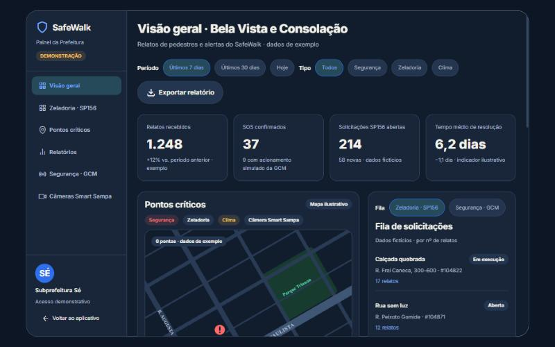

-
19:42
Antes de sair
Você compara as rotas e escolhe quem acompanha. Só entra quem aceitou o convite.
-
19:44
No caminho
Quem acompanha vê o roteiro e a última posição recebida, com o horário. O SOS fica sempre à vista.
-
19:49
Saiu do previsto
Passou do horário ou o sinal sumiu: o app pergunta se está tudo bem. O prazo corre no servidor, então continua valendo mesmo se o celular desligar.
-
19:50
Alerta ativo
Os contatos veem o alerta no link. Só o PIN cancela. Sob ameaça, um segundo PIN finge encerrar e avisa em silêncio.
Me avisa quando chegar.
A frase que a gente diz para quem ama, toda vez que alguém volta a pé à noite.
Role a páginaSão Paulo sabe muito sobre as suas calçadas. Quem caminha nelas, quase nada.
O SafeWalk reúne dados públicos da rua, rota a pé e pessoas de confiança em um único app. Buscamos investimento para levar o protótipo às ruas, começando pela Bela Vista.
49.349
sinistros com pedestres registrados na capital.
Infosiga, Detran-SP, arquivos públicos nomeados de 2015 a 2026. Lote importado em 30/10/2026. O período disponível varia e 4.526 registros não têm coordenadas.
A cidade guarda essas informações. Só que cada uma mora em um portal diferente, e ninguém abre cinco sites antes de sair do metrô.
GeoSampaCalçadas e iluminação
SP156Solicitações de zeladoria
GeoSampa e SGBÁreas que podem alagar
InfosigaSinistros com pedestres
SSP-SPCrimes registrados
Milhões caminham todos os dias. Muita gente caminha com medo.
6,5 mi
viagens a pé por dia na cidade de São Paulo.
Caminhada é 31% de 21,07 milhões de viagens diárias. Pesquisa OD 2023, divulgada pela Prefeitura. Multiplicação nossa.
56,8%
das mulheres no Brasil têm medo de circular à noite perto de casa. 40,9% deixaram de sair à noite em 12 meses por medo.
Datafolha para o Fórum Brasileiro de Segurança Pública, março de 2026.
150 mil+
celulares roubados ou furtados na capital em 2025.
SSP-SP, conforme a imprensa. As apurações variam entre 154 mil e 162 mil.
US$ 489,5 mi
foi a receita da Life360 em 2025, com 95,8 milhões de usuários mensais. Já existe gente pagando por localização e segurança.
Resultados anuais da Life360. Referência internacional, não uma projeção do SafeWalk.
Uma volta para casa, em quatro momentos.
Telas capturadas do protótipo em funcionamento, com horários de exemplo.
Nesta conta de demonstração, a posição é fictícia e as etapas de câmeras e GCM são simuladas.
Do outro lado, alguém acompanha.
Quem você escolheu abre um link e vê o roteiro, a última posição recebida e o horário dela. Ao encerrar o trajeto, o link deixa de mostrar sua localização.
Um minuto a mais. 43% menos registros.
22 min
Mais rápida: 485 pontos na leitura de registros
23 min
Menos registros conhecidos: 278 pontos
O app soma furtos, roubos, agressões, atropelamentos e relatos perto de cada trecho, pesando o horário da saída. Quem caminha vê o motivo e decide.
Cálculo real à noite, da Avenida Paulista à Rua Frei Caneca, em 08/11/2026. Mais de 630 mil ocorrências da SSP-SP. Mostra o que já foi registrado e não indica que um caminho seja seguro. A SSP não publica o local de crimes sexuais, que ficam fora da conta.
Cada dado com fonte, data e limite.
O app nunca carimba uma rua como segura. Ele mostra o que foi registrado e diz o que o registro não prova. Tratar fontes tão diferentes com esse rigor é o que mais dá trabalho para copiar.
Menos registros não significa rota segura
Luminária cadastrada não significa luz acesa
Protocolo finalizado não significa reparo feito
Sem registro não significa sem risco
Largura registrada não significa passagem livre
Semáforo cadastrado não significa sinal funcionando
Endereço no mapa não significa aberto 24 horas
Chuva estimada não significa rua alagada
Coordenada registrada não significa local exato
O produto já roda. Falta ligar a cidade.
Funciona hoje
- Mapa, busca e rota a pé
- Comparação de rotas por registros
- Convite e link com prazo
- Alertas com prazo no servidor
- PIN e PIN de coação
- Relatos da comunidade
Ainda simulado
- Smart Sampa e câmeras
- Acionamento da GCM
- Envio de relatos ao SP156
- Painel com dados reais
- Detecção de parada na rua

A oportunidade: tirar o SafeWalk do protótipo e colocar na rua.
Começando pela Bela Vista, o investimento paga três etapas, nesta ordem. Cada uma responde a uma pergunta antes de gastarmos na seguinte.
-
As pessoas usam?
Um grupo de voluntários caminha pela Bela Vista e arredores com o app e seus contatos. Verificamos GPS, tela bloqueada e avisos em aparelhos reais.
-
Aguenta a operação?
Contratamos mapas e rotas com garantia de serviço, hospedagem contínua e publicação nas lojas de aplicativos. Os serviços gratuitos de hoje não têm essa garantia.
-
Quem paga?
Testamos as três frentes de receita e buscamos autorização para integrar SP156, Smart Sampa e GCM, onde a cidade quiser participar.
Grátis para o cidadão, licenciado para a cidade
Hipóteses a validar. Ainda não há receita.
- Subprefeituras: painel para priorizar calçadas, iluminação e obras a partir dos relatos
- Segurança Urbana e GCM: onde e quando relatos e pedidos de ajuda se concentram, para planejar rondas
- Empresas e universidades: acompanhamento para quem volta à noite, pago pela organização
Para onde vai o investimento
Na ordem das etapas acima.
- Testes em aparelhos reais e publicação nas lojas
- Mapas, rotas e hospedagem de produção
- Integrações com serviços públicos
- Segurança, privacidade e adequação à LGPD
Me avisa quando chegar.
Cheguei.
O próximo passo é uma conversa.
Mostramos o protótipo funcionando ao vivo e abrimos o valor da rodada, o prazo e as metas de cada etapa.
Ver o appAcesse o SafeWalk.
Tudo o que esta apresentação mostra está no ar. Escolha por onde começar: o app de quem caminha ou o painel pensado para a Prefeitura.
Para quem caminha
Funciona no navegador do celular ou do computador. A conta é gratuita.
- Abrir o appMapa, rota a pé com o motivo de cada alerta e acompanhamento por quem você confia.
- Criar contaNome, e-mail e senha. Leva menos de um minuto.
- EntrarJá tem conta? Continue de onde parou.
- Como usarGuia passo a passo do trajeto, dos alertas e do PIN. Depois de entrar na conta.
- Esqueci minha senhaReceba um link por e-mail para criar uma nova senha.
Para a Prefeitura
Buracos, semáforos com defeito e outros problemas que as pessoas escolheram enviar pelo app chegam ao painel com prioridade sugerida e mapa.